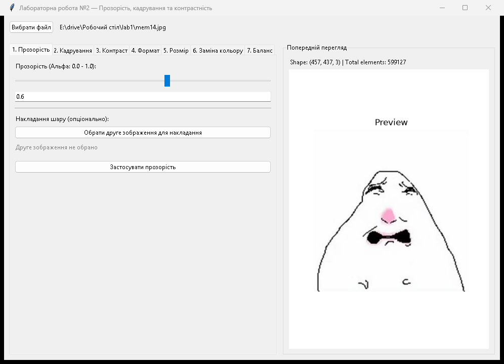
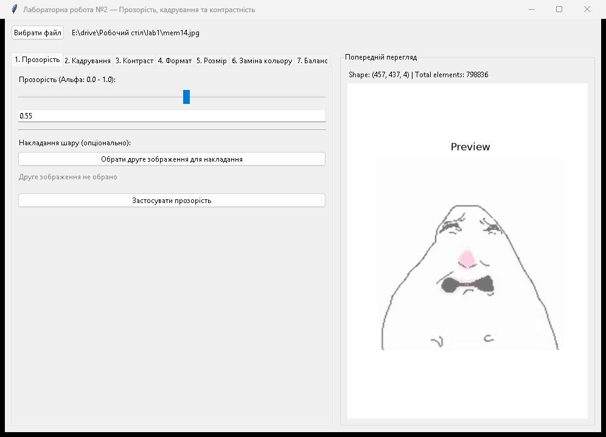
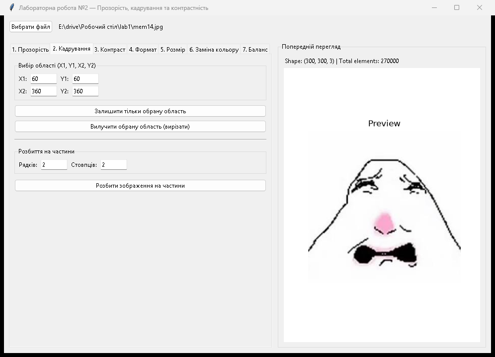
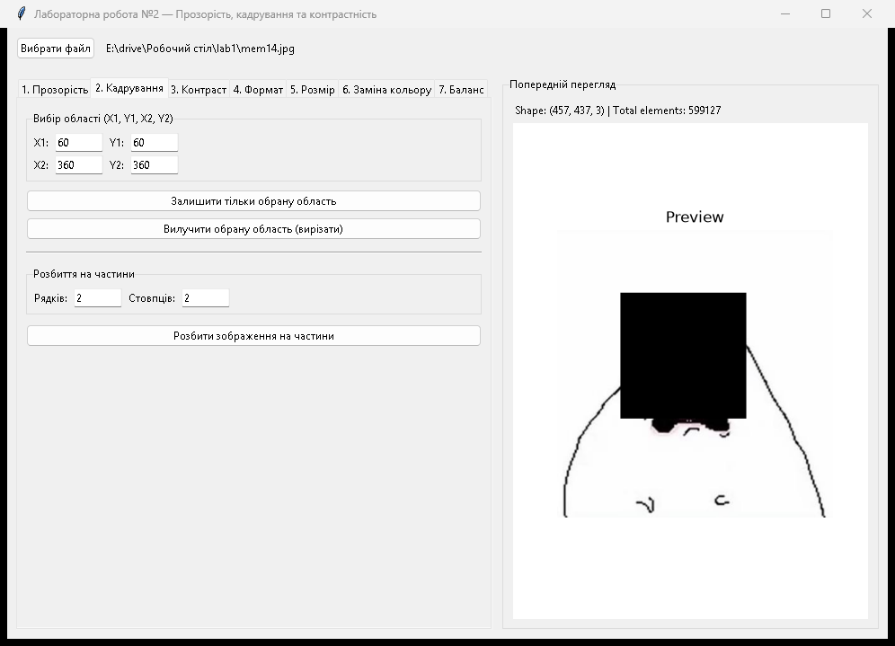
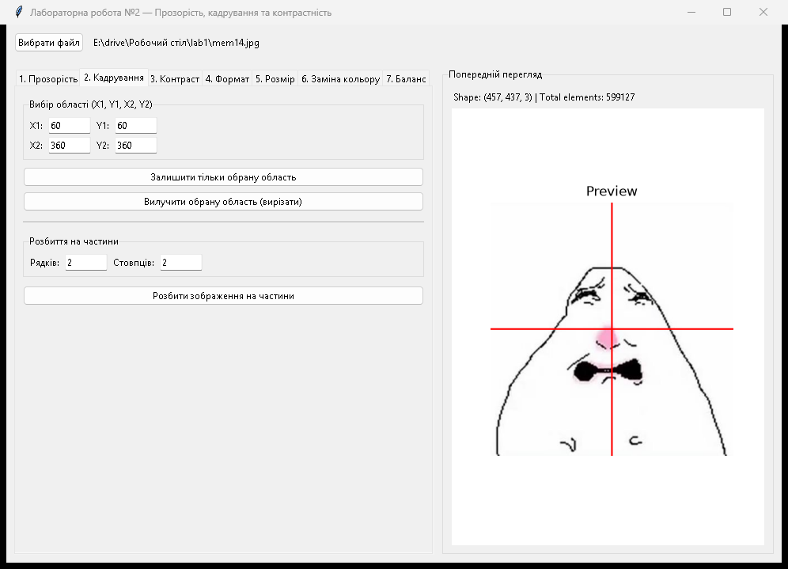
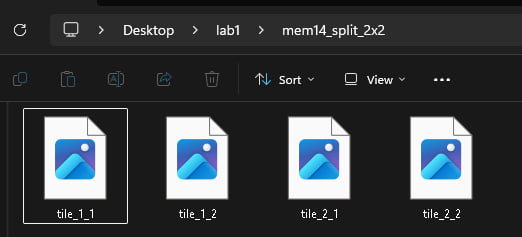
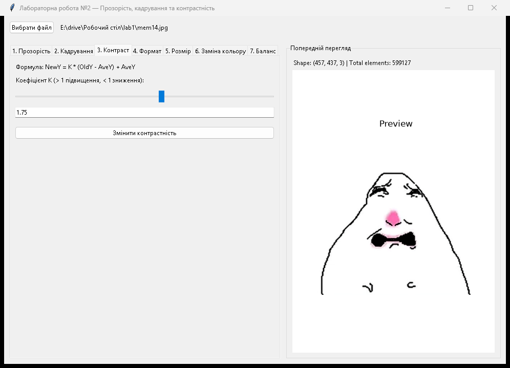
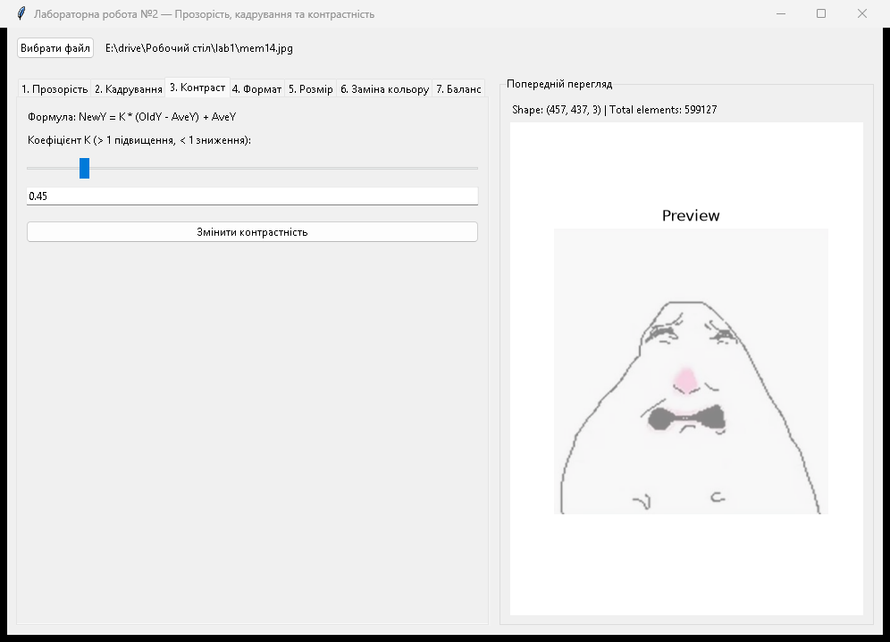

ЗВІТ
з лабораторної роботи з дисципліни
«Комп'ютерна графіка та візуалізація»
Тема: додавання прозорості, кадрування та змінення контрастності зображень.
1. Лист завдання
Тема: додавання прозорості, кадрування та змінення контрастності зображень.
Мета: ознайомитися з методами обробки зображень для створення ефектів прозорості, кадрування та покращення якості за допомогою збільшення контрастності; отримати практичний досвід у розробці функцій для роботи з шарами, обробки окремих областей зображення та оптимізації його візуального вигляду; реалізувати програму, яка забезпечує інтерактивний інтерфейс для виконання цих задач.
Перелік завдань:
- Розширити графічний інтерфейс програми з лабораторної роботи №1 новими вкладками для функцій другої роботи.
- Реалізувати налаштування прозорості зображення (зміна альфа-каналу) та накладання другого зображення як шару.
- Реалізувати кадрування: вибір прямокутної області за координатами із можливістю залишити тільки її або навпаки вирізати.
- Реалізувати функцію розбиття зображення на довільну кількість частин (сітка рядків і стовпців) зі збереженням фрагментів у папку.
- Реалізувати алгоритм зміни контрастності зображення за формулою NewY = K * (OldY - AveY) + AveY.
- Забезпечити попередній перегляд результатів на полотні та можливість збереження обробленого файлу.
2. Опис ходу виконання завдань
Хід розробки та функціональні блоки:
- apply_transparency — функція регулювання альфа-каналу або накладання двох зображень одне на одне за коефіцієнтом прозорості.
- cut_area — функція вилучення прямокутної області: перетворює зображення в RGBA та заповнює вибрану область нулями [0, 0, 0, 0], роблячи її прозорою.
- split_image — алгоритм розбиття зображення на список тайлів заданої кількості рядків і стовпців з урахуванням граничних пікселів.
- crop_image_region — функція прямокутного кадрування для збереження вибраної області або її вирізання за допомогою cut_area.
- split_image_grid — метод розбиття вихідного зображення на частини через split_image зі збереженням файлів у папку та показом сітки.
- change_contrast_lab2 — алгоритм зміни контрастності на основі відхилення від середньої яскравості каналу з обмеженням значень у діапазоні від 0 до 255.
- show_and_save_gui — функція виведення зображення у вікно попереднього перегляду через Matplotlib та виклику діалогу збереження файлу.
Використані бібліотеки та модулі:
- tkinter / ttk — графічний інтерфейс (вікно програми, вкладки Notebook, кнопки, повзунки, поля введення).
- filedialog / messagebox — відкриття вікна вибору файлів та повідомлення про збереження або помилки.
- numpy — робота з масивами зображень, зрізи областей, обчислення середнього значення каналів та обрізання значень (clip).
- PIL (Pillow) — функції кадрування crop(), збереження окремих тайлів та робота з альфа-каналом у cut_area().
- skimage (scikit-image) — читання, зміна розмірів зображень для накладання шарів та збереження результатів обробки.
- matplotlib — рендеринг зображень та вбудовування полотна перегляду в інтерфейс Tkinter.
3. Лістинг програми
import os
import tkinter as tk
from tkinter import ttk, filedialog, messagebox
import numpy as np
from matplotlib import pyplot as plt
from matplotlib.backends.backend_tkagg import FigureCanvasTkAgg
from skimage.io import imread, imsave
from skimage.transform import resize
from PIL import Image
def show_and_save_gui(image_array: np.ndarray, file_name: str, canvas_frame, info_label, save: bool = True):
for widget in canvas_frame.winfo_children():
widget.destroy()
fig, ax = plt.subplots(figsize=(5, 4))
if image_array.ndim == 2:
ax.imshow(image_array, cmap="gray")
else:
ax.imshow(image_array)
ax.axis("off")
ax.set_title("Preview")
canvas = FigureCanvasTkAgg(fig, master=canvas_frame)
canvas.draw()
canvas.get_tk_widget().pack(fill=tk.BOTH, expand=True)
plt.close(fig)
info_label.config(text=f"Shape: {image_array.shape} | Total elements: {image_array.size}")
if save and file_name:
if messagebox.askyesno("Save Image", f"Save image as:\n{file_name}?"):
try:
if image_array.ndim == 3 and image_array.shape[2] == 4 and not file_name.lower().endswith((".png", ".tiff", ".tif")):
file_name = file_name.rsplit(".", 1)[0] + ".png"
imsave(file_name, image_array)
messagebox.showinfo("Success", f"Saved as: {file_name}")
except Exception as e:
messagebox.showerror("Error", f"Failed to save image:\n{e}")
def image_format_conversion(image_name: str, conversion_format: str, canvas_frame, info_label):
conversion_format = conversion_format.lstrip(".").lower()
new_file_name = f"{image_name.rsplit('.', 1)[0]}_new.{conversion_format}"
image_array = imread(image_name)
converted_array = image_array.copy()
if converted_array.ndim == 3 and converted_array.shape[2] == 4:
if conversion_format not in ["png", "gif", "tiff"]:
converted_array = converted_array[:, :, :3]
show_and_save_gui(converted_array, new_file_name, canvas_frame, info_label)
def image_size_conversion(image_name: str, width: int, height: int, canvas_frame, info_label):
image_array = imread(image_name)
target_h = max(1, int(height))
target_w = max(1, int(width))
resized_array = resize(image_array, (target_h, target_w), preserve_range=True, anti_aliasing=False).astype(np.uint8)
new_file_name = f"{image_name.rsplit('.', 1)[0]}_resized.{image_name.rsplit('.', 1)[1]}"
show_and_save_gui(resized_array, new_file_name, canvas_frame, info_label)
def image_size_conversion_height(image_name: str, height: float, canvas_frame, info_label):
image_array = imread(image_name)
h, w = image_array.shape[:2]
new_height = max(1, int(height))
new_width = max(1, int((w / h) * new_height))
resized_array = resize(image_array, (new_height, new_width), preserve_range=True, anti_aliasing=False).astype(np.uint8)
new_file_name = f"{image_name.rsplit('.', 1)[0]}_resized.{image_name.rsplit('.', 1)[1]}"
show_and_save_gui(resized_array, new_file_name, canvas_frame, info_label)
def image_size_conversion_width(image_name: str, width: float, canvas_frame, info_label):
image_array = imread(image_name)
h, w = image_array.shape[:2]
new_width = max(1, int(width))
new_height = max(1, int((h / w) * new_width))
resized_array = resize(image_array, (new_height, new_width), preserve_range=True, anti_aliasing=False).astype(np.uint8)
new_file_name = f"{image_name.rsplit('.', 1)[0]}_resized.{image_name.rsplit('.', 1)[1]}"
show_and_save_gui(resized_array, new_file_name, canvas_frame, info_label)
def image_change(image_name: str, target_color: np.ndarray, replacement_color: np.ndarray, canvas_frame, info_label):
base_name, ext = image_name.rsplit(".", 1)
new_file_name = f"{base_name}_color_change.{ext}"
img = imread(image_name)
img_modified = img.copy()
target = np.array(target_color, dtype=img.dtype)
replacement = np.array(replacement_color, dtype=img.dtype)
mask = np.all(img_modified[:, :, :3] == target, axis=-1)
img_modified[mask, :3] = replacement
show_and_save_gui(img_modified, new_file_name, canvas_frame, info_label)
def color_balance_corection(image_name: str, r: float, g: float, b: float, canvas_frame, info_label):
base_name, ext = image_name.rsplit(".", 1)
new_file_name = f"{base_name}_color_balance.{ext}"
image_array = imread(image_name).astype(np.float32)
if image_array.ndim == 3:
image_array[:, :, 0] *= r
image_array[:, :, 1] *= g
image_array[:, :, 2] *= b
image_array = np.clip(image_array, 0, 255).astype(np.uint8)
show_and_save_gui(image_array, new_file_name, canvas_frame, info_label)
def apply_transparency(image_name: str, alpha_value: float, canvas_frame, info_label, overlay_path: str = ""):
img = imread(image_name)
base_name = image_name.rsplit(".", 1)[0]
alpha_clamped = np.clip(alpha_value, 0.0, 1.0)
alpha_byte = int(alpha_clamped * 255)
if overlay_path and os.path.exists(overlay_path):
overlay = imread(overlay_path)
h, w = img.shape[:2]
overlay_resized = resize(overlay[:, :, :3], (h, w), preserve_range=True, anti_aliasing=True).astype(np.float32)
img_rgb = img[:, :, :3].astype(np.float32)
blended = (alpha_clamped * img_rgb + (1.0 - alpha_clamped) * overlay_resized)
res = np.clip(blended, 0, 255).astype(np.uint8)
new_file_name = f"{base_name}_blended.png"
else:
h, w = img.shape[:2]
if img.ndim == 2:
rgb = np.stack([img, img, img], axis=-1)
else:
rgb = img[:, :, :3]
alpha_channel = np.full((h, w, 1), alpha_byte, dtype=np.uint8)
res = np.concatenate([rgb, alpha_channel], axis=-1)
new_file_name = f"{base_name}_alpha_{int(alpha_clamped*100)}.png"
show_and_save_gui(res, new_file_name, canvas_frame, info_label)
def cut_area(image: Image.Image, box: tuple) -> Image.Image:
if image.mode != "RGBA":
img = image.convert("RGBA")
else:
img = image.copy()
data = np.array(img)
x1, y1, x2, y2 = box
data[y1:y2, x1:x2] = [0, 0, 0, 0]
return Image.fromarray(data)
def split_image(image: Image.Image, rows: int, cols: int) -> list:
width, height = image.size
tile_width, tile_height = width // cols, height // rows
parts = []
for row in range(rows):
for col in range(cols):
left = col * tile_width
top = row * tile_height
right = left + tile_width if col < cols - 1 else width
bottom = top + tile_height if row < rows - 1 else height
parts.append(image.crop((left, top, right, bottom)))
return parts
def crop_image_region(image_name: str, x1: int, y1: int, x2: int, y2: int, keep_region: bool, canvas_frame, info_label):
pil_img = Image.open(image_name)
w, h = pil_img.size
x_min, x_max = max(0, min(x1, x2)), min(w, max(x1, x2))
y_min, y_max = max(0, min(y1, y2)), min(h, max(y1, y2))
if x_min >= x_max or y_min >= y_max:
messagebox.showerror("Error", "Invalid crop coordinates: region has 0 width or height!")
return
base_name, ext = image_name.rsplit(".", 1)
if keep_region:
cropped = pil_img.crop((x_min, y_min, x_max, y_max))
res = np.array(cropped)
new_file_name = f"{base_name}_crop_{x_min}_{y_min}_{x_max}_{y_max}.{ext}"
else:
cut = cut_area(pil_img, (x_min, y_min, x_max, y_max))
res = np.array(cut)
new_file_name = f"{base_name}_cutout_{x_min}_{y_min}_{x_max}_{y_max}.png"
show_and_save_gui(res, new_file_name, canvas_frame, info_label)
def split_image_grid(image_name: str, rows: int, cols: int, canvas_frame, info_label):
pil_img = Image.open(image_name)
rows = max(1, int(rows))
cols = max(1, int(cols))
parts = split_image(pil_img, rows, cols)
base_dir = os.path.dirname(image_name)
base_name = os.path.splitext(os.path.basename(image_name))[0]
out_dir = os.path.join(base_dir, f"{base_name}_split_{rows}x{cols}")
os.makedirs(out_dir, exist_ok=True)
idx = 0
for r in range(rows):
for c in range(cols):
tile_path = os.path.join(out_dir, f"tile_{r+1}_{c+1}.png")
parts[idx].save(tile_path)
idx += 1
img = np.array(pil_img)
h, w = img.shape[:2]
tile_h = h // rows
tile_w = w // cols
preview_img = img.copy()
line_color = [255, 0, 0] if preview_img.ndim == 3 else 255
for r in range(1, rows):
y = r * tile_h
preview_img[max(0, y-1):min(h, y+2), :] = line_color[:preview_img.shape[2]] if preview_img.ndim == 3 else line_color
for c in range(1, cols):
x = c * tile_w
preview_img[:, max(0, x-1):min(w, x+2)] = line_color[:preview_img.shape[2]] if preview_img.ndim == 3 else line_color
info_label.config(text=f"Split into {len(parts)} parts ({rows}x{cols}). Saved to: {out_dir}")
show_and_save_gui(preview_img, "", canvas_frame, info_label, save=False)
messagebox.showinfo("Success", f"Image split into {len(parts)} parts!\nSaved in directory:\n{out_dir}")
def change_contrast_lab2(image_name: str, k: float, canvas_frame, info_label):
img = imread(image_name)
base_name, ext = image_name.rsplit(".", 1)
new_file_name = f"{base_name}_contrast_k{k:.2f}.{ext}"
result = img.astype(np.float32)
if result.ndim == 2:
ave = np.mean(result)
result = k * (result - ave) + ave
elif result.ndim == 3:
num_channels = min(3, result.shape[2])
for c in range(num_channels):
ave = np.mean(result[:, :, c])
result[:, :, c] = k * (result[:, :, c] - ave) + ave
result = np.clip(result, 0, 255).astype(np.uint8)
show_and_save_gui(result, new_file_name, canvas_frame, info_label)
class AppLab2:
def __init__(self, root):
self.root = root
self.root.title("Лабораторна робота №2 — Прозорість, кадрування та контрастність")
self.root.geometry("980x680")
self.image_path = ""
self.overlay_path = ""
file_frame = ttk.Frame(root, padding=10)
file_frame.pack(fill=tk.X)
ttk.Button(file_frame, text="Вибрати файл", command=self.select_file).pack(side=tk.LEFT)
self.lbl_file = ttk.Label(file_frame, text="Файл не вибрано", padding=(10, 0))
self.lbl_file.pack(side=tk.LEFT, fill=tk.X, expand=True)
main_frame = ttk.Frame(root, padding=10)
main_frame.pack(fill=tk.BOTH, expand=True)
self.notebook = ttk.Notebook(main_frame)
self.notebook.pack(side=tk.LEFT, fill=tk.BOTH, padx=(0, 10), expand=False)
preview_frame = ttk.LabelFrame(main_frame, text="Попередній перегляд", padding=10)
preview_frame.pack(side=tk.RIGHT, fill=tk.BOTH, expand=True)
self.lbl_info = ttk.Label(preview_frame, text="")
self.lbl_info.pack(anchor=tk.W, pady=(0, 5))
self.canvas_frame = ttk.Frame(preview_frame)
self.canvas_frame.pack(fill=tk.BOTH, expand=True)
self._init_transparency_tab()
self._init_crop_tab()
self._init_contrast_tab()
self._init_format_tab()
self._init_size_tab()
self._init_color_tab()
self._init_balance_tab()
def select_file(self):
path = filedialog.askopenfilename(
filetypes=[("Image files", "*.jpg *.jpeg *.png *.bmp *.tiff *.gif"), ("All files", "*.*")]
)
if path:
try:
self.image_path = path
self.lbl_file.config(text=path)
image_array = imread(path)
show_and_save_gui(image_array, path, self.canvas_frame, self.lbl_info, save=False)
h, w = image_array.shape[:2]
self.ent_crop_x2.delete(0, tk.END)
self.ent_crop_x2.insert(0, str(w))
self.ent_crop_y2.delete(0, tk.END)
self.ent_crop_y2.insert(0, str(h))
except Exception as e:
messagebox.showerror("Помилка", f"Не вдалося відкрити зображення:\n{e}")
def _check_file(self):
if not self.image_path:
messagebox.showerror("Помилка", "Спочатку оберіть зображення!")
return False
return True
def _init_transparency_tab(self):
tab = ttk.Frame(self.notebook, padding=10)
self.notebook.add(tab, text="1. Прозорість")
ttk.Label(tab, text="Прозорість (Альфа: 0.0 - 1.0):").pack(anchor=tk.W, pady=2)
self.scale_alpha = ttk.Scale(tab, from_=0.0, to=1.0, value=0.6)
self.scale_alpha.pack(fill=tk.X, pady=5)
self.ent_alpha = ttk.Entry(tab)
self.ent_alpha.insert(0, "0.6")
self.ent_alpha.pack(fill=tk.X, pady=2)
def sync_scale(val):
self.ent_alpha.delete(0, tk.END)
self.ent_alpha.insert(0, f"{float(val):.2f}")
self.scale_alpha.config(command=sync_scale)
ttk.Separator(tab, orient=tk.HORIZONTAL).pack(fill=tk.X, pady=10)
ttk.Label(tab, text="Накладання шару (опціонально):").pack(anchor=tk.W)
ttk.Button(tab, text="Обрати друге зображення для накладання", command=self._select_overlay).pack(fill=tk.X, pady=5)
self.lbl_overlay = ttk.Label(tab, text="Друге зображення не обрано", foreground="gray")
self.lbl_overlay.pack(anchor=tk.W, pady=2)
ttk.Button(tab, text="Застосувати прозорість", command=self._run_transparency).pack(pady=15, fill=tk.X)
def _select_overlay(self):
path = filedialog.askopenfilename(
filetypes=[("Image files", "*.jpg *.jpeg *.png *.bmp *.tiff *.gif"), ("All files", "*.*")]
)
if path:
self.overlay_path = path
self.lbl_overlay.config(text=os.path.basename(path), foreground="black")
def _run_transparency(self):
if not self._check_file(): return
try:
alpha = float(self.ent_alpha.get())
except ValueError:
messagebox.showerror("Помилка", "Введіть числове значення альфа від 0.0 до 1.0!")
return
apply_transparency(self.image_path, alpha, self.canvas_frame, self.lbl_info, self.overlay_path)
def _init_crop_tab(self):
tab = ttk.Frame(self.notebook, padding=10)
self.notebook.add(tab, text="2. Кадрування")
lbl_rect = ttk.LabelFrame(tab, text="Вибір області (X1, Y1, X2, Y2)", padding=5)
lbl_rect.pack(fill=tk.X, pady=5)
ttk.Label(lbl_rect, text="X1:").grid(row=0, column=0, sticky=tk.W)
self.ent_crop_x1 = ttk.Entry(lbl_rect, width=8)
self.ent_crop_x1.insert(0, "0")
self.ent_crop_x1.grid(row=0, column=1, padx=5, pady=2)
ttk.Label(lbl_rect, text="Y1:").grid(row=0, column=2, sticky=tk.W)
self.ent_crop_y1 = ttk.Entry(lbl_rect, width=8)
self.ent_crop_y1.insert(0, "0")
self.ent_crop_y1.grid(row=0, column=3, padx=5, pady=2)
ttk.Label(lbl_rect, text="X2:").grid(row=1, column=0, sticky=tk.W)
self.ent_crop_x2 = ttk.Entry(lbl_rect, width=8)
self.ent_crop_x2.insert(0, "200")
self.ent_crop_x2.grid(row=1, column=1, padx=5, pady=2)
ttk.Label(lbl_rect, text="Y2:").grid(row=1, column=2, sticky=tk.W)
self.ent_crop_y2 = ttk.Entry(lbl_rect, width=8)
self.ent_crop_y2.insert(0, "200")
self.ent_crop_y2.grid(row=1, column=3, padx=5, pady=2)
ttk.Button(tab, text="Залишити тільки обрану область", command=lambda: self._run_crop(True)).pack(fill=tk.X, pady=3)
ttk.Button(tab, text="Вилучити обрану область (вирізати)", command=lambda: self._run_crop(False)).pack(fill=tk.X, pady=3)
ttk.Separator(tab, orient=tk.HORIZONTAL).pack(fill=tk.X, pady=10)
lbl_grid = ttk.LabelFrame(tab, text="Розбиття на частини", padding=5)
lbl_grid.pack(fill=tk.X, pady=5)
ttk.Label(lbl_grid, text="Рядків:").grid(row=0, column=0, sticky=tk.W)
self.ent_rows = ttk.Entry(lbl_grid, width=8)
self.ent_rows.insert(0, "2")
self.ent_rows.grid(row=0, column=1, padx=5, pady=2)
ttk.Label(lbl_grid, text="Стовпців:").grid(row=0, column=2, sticky=tk.W)
self.ent_cols = ttk.Entry(lbl_grid, width=8)
self.ent_cols.insert(0, "2")
self.ent_cols.grid(row=0, column=3, padx=5, pady=2)
ttk.Button(tab, text="Розбити зображення на частини", command=self._run_split).pack(fill=tk.X, pady=5)
def _run_crop(self, keep_region: bool):
if not self._check_file(): return
try:
x1 = int(self.ent_crop_x1.get())
y1 = int(self.ent_crop_y1.get())
x2 = int(self.ent_crop_x2.get())
y2 = int(self.ent_crop_y2.get())
except ValueError:
messagebox.showerror("Помилка", "Введіть цілочисельні координати пікселів!")
return
crop_image_region(self.image_path, x1, y1, x2, y2, keep_region, self.canvas_frame, self.lbl_info)
def _run_split(self):
if not self._check_file(): return
try:
r = int(self.ent_rows.get())
c = int(self.ent_cols.get())
if r <= 0 or c <= 0: raise ValueError()
except ValueError:
messagebox.showerror("Помилка", "Кількість рядків та стовпців має бути більшою за 0!")
return
split_image_grid(self.image_path, r, c, self.canvas_frame, self.lbl_info)
def _init_contrast_tab(self):
tab = ttk.Frame(self.notebook, padding=10)
self.notebook.add(tab, text="3. Контраст")
ttk.Label(tab, text="Формула: NewY = K * (OldY - AveY) + AveY").pack(anchor=tk.W, pady=2)
ttk.Label(tab, text="Коефіцієнт K (> 1 підвищення, < 1 зниження):").pack(anchor=tk.W, pady=5)
self.scale_k = ttk.Scale(tab, from_=0.1, to=3.0, value=1.5)
self.scale_k.pack(fill=tk.X, pady=5)
self.ent_k = ttk.Entry(tab)
self.ent_k.insert(0, "1.5")
self.ent_k.pack(fill=tk.X, pady=2)
def sync_k(val):
self.ent_k.delete(0, tk.END)
self.ent_k.insert(0, f"{float(val):.2f}")
self.scale_k.config(command=sync_k)
ttk.Button(tab, text="Змінити контрастність", command=self._run_contrast).pack(pady=15, fill=tk.X)
def _run_contrast(self):
if not self._check_file(): return
try:
k = float(self.ent_k.get())
if k < 0: raise ValueError()
except ValueError:
messagebox.showerror("Помилка", "Введіть коректне значення коефіцієнта K >= 0!")
return
change_contrast_lab2(self.image_path, k, self.canvas_frame, self.lbl_info)
def _init_format_tab(self):
tab = ttk.Frame(self.notebook, padding=10)
self.notebook.add(tab, text="4. Формат")
ttk.Label(tab, text="Цільовий формат:").pack(anchor=tk.W, pady=5)
self.ent_format = ttk.Entry(tab)
self.ent_format.insert(0, "png")
self.ent_format.pack(fill=tk.X, pady=5)
ttk.Button(tab, text="Конвертувати формат", command=self._run_format).pack(pady=10)
def _run_format(self):
if not self._check_file(): return
fmt = self.ent_format.get().strip()
valid_formats = ["tiff", "bmp", "gif", "png", "jpg", "jpeg"]
if fmt.lower() not in valid_formats:
messagebox.showerror("Error", f"Invalid format! Allowed: {', '.join(valid_formats)}")
return
image_format_conversion(self.image_path, fmt, self.canvas_frame, self.lbl_info)
def _init_size_tab(self):
tab = ttk.Frame(self.notebook, padding=10)
self.notebook.add(tab, text="5. Розмір")
ttk.Label(tab, text="Висота (0 якщо тільки за шириною):").pack(anchor=tk.W)
self.ent_h = ttk.Entry(tab)
self.ent_h.insert(0, "0")
self.ent_h.pack(fill=tk.X, pady=5)
ttk.Label(tab, text="Ширина (0 якщо тільки за висотою):").pack(anchor=tk.W)
self.ent_w = ttk.Entry(tab)
self.ent_w.insert(0, "0")
self.ent_w.pack(fill=tk.X, pady=5)
ttk.Button(tab, text="Змінити розмір", command=self._run_size).pack(pady=10)
def _run_size(self):
if not self._check_file(): return
try:
h = float(self.ent_h.get())
w = float(self.ent_w.get())
except ValueError:
messagebox.showerror("Error", "Enter numeric values!")
return
if h != 0 and w != 0:
image_size_conversion(self.image_path, int(w), int(h), self.canvas_frame, self.lbl_info)
elif h == 0 and w != 0:
image_size_conversion_width(self.image_path, w, self.canvas_frame, self.lbl_info)
elif h != 0 and w == 0:
image_size_conversion_height(self.image_path, h, self.canvas_frame, self.lbl_info)
else:
messagebox.showwarning("Warning", "Write at least one parameter!")
def _init_color_tab(self):
tab = ttk.Frame(self.notebook, padding=10)
self.notebook.add(tab, text="6. Заміна кольору")
ttk.Label(tab, text="Оригінальний RGB (наприклад 255 0 0):").pack(anchor=tk.W)
self.ent_target = ttk.Entry(tab)
self.ent_target.insert(0, "255 0 0")
self.ent_target.pack(fill=tk.X, pady=5)
ttk.Label(tab, text="Новий RGB (наприклад 0 255 0):").pack(anchor=tk.W)
self.ent_replace = ttk.Entry(tab)
self.ent_replace.insert(0, "0 255 0")
self.ent_replace.pack(fill=tk.X, pady=5)
ttk.Button(tab, text="Замінити колір", command=self._run_color).pack(pady=10)
def _run_color(self):
if not self._check_file(): return
try:
target = np.array(self.ent_target.get().split(), dtype=int)
replacement = np.array(self.ent_replace.get().split(), dtype=int)
except ValueError:
messagebox.showerror("Error", "Invalid RGB format!")
return
image_change(self.image_path, target, replacement, self.canvas_frame, self.lbl_info)
def _init_balance_tab(self):
tab = ttk.Frame(self.notebook, padding=10)
self.notebook.add(tab, text="7. Баланс")
ttk.Label(tab, text="Коефіцієнт Red:").pack(anchor=tk.W)
self.ent_r = ttk.Entry(tab)
self.ent_r.insert(0, "1.0")
self.ent_r.pack(fill=tk.X, pady=2)
ttk.Label(tab, text="Коефіцієнт Green:").pack(anchor=tk.W)
self.ent_g = ttk.Entry(tab)
self.ent_g.insert(0, "1.0")
self.ent_g.pack(fill=tk.X, pady=2)
ttk.Label(tab, text="Коефіцієнт Blue:").pack(anchor=tk.W)
self.ent_b = ttk.Entry(tab)
self.ent_b.insert(0, "1.0")
self.ent_b.pack(fill=tk.X, pady=2)
ttk.Button(tab, text="Коригувати баланс", command=self._run_balance).pack(pady=10)
def _run_balance(self):
if not self._check_file(): return
try:
r = float(self.ent_r.get())
g = float(self.ent_g.get())
b = float(self.ent_b.get())
except ValueError:
messagebox.showerror("Error", "Enter numeric values!")
return
color_balance_corection(self.image_path, r, g, b, self.canvas_frame, self.lbl_info)
if __name__ == "__main__":
root = tk.Tk()
app = AppLab2(root)
root.mainloop()4. Результати виконання роботи
Рис. 1. Головне вікно програми після вибору вихідного файлу

Рис. 2. Налаштування прозорості зображення (вкладка «1. Прозорість»)

Рис. 3. Кадрування: збереження обраної прямокутної області (вкладка «2. Кадрування»)

Рис. 4. Вилучення обраної області із зображення (вкладка «2. Кадрування»)

Рис. 5. Розбиття зображення на 4 частини (сітка 2х2)


Рис. 6. Збільшення контрастності (вкладка «3. Контраст»)

Рис. 7. Зменшення контрастності (вкладка «3. Контраст»)

Рис. 8. Діалогове вікно підтвердження збереження файлу

5. Висновки
Під час виконання лабораторної роботи було створено програму на мові Python для додавання ефектів прозорості, кадрування та зміни контрастності растрових зображень.
У ході роботи розроблено графічний інтерфейс користувача на основі бібліотеки tkinter, реалізовано алгоритми альфа-змішування шарів, обрізання та розбиття зображення на частини, а також регулювання контрастності за формулою засобами NumPy та scikit-image.